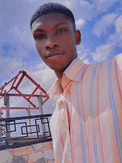

Samuel Okwan Paintsil | WDD 130
Hello and welcome to my website. My name is Samuel Okwan Paintsil, and I'm a Software Development student at BYU Pathway. This website showcases my journey in web development, including projects, assignments, and skills I've acquired throughout my studies. I am excited to learn more about web development and design, and I look forward to learning more about this intriguing industry. Feel free to explore and learn more about my work and interests. It's a pleasure to have you here!